| Working with Calculations and Totals |
About Calculations, Totals, and SortingOnce you add fields and filters to your report, you might want to calculate and manipulate the data on your report. There are the following three primary methods:
Displaying Grand TotalsBy default, Grand Totals don't display when you view a report in table format (grid of rows and columns). Also, Totals never display when you view a report in chart format. To show or hide Grand Totals, do the following:
To hide Grand Totals while viewing a report in table report, click the Grand Total cell on the report, and select Hide Grand Total from the menu. Note that this method does not allow you to show Grand Totals again, once it is hidden. Displaying Totals as Averages, Max, Min, etcGrand totals and subtotals summarize detail row or column values. You can choose to summarize the data in the following ways:
To display these, click the number field (such as "Sales Revenue") in the report and select Show Average, Max, Min, etc from the menu. More about AveragesIn most cases, it looks like Pentaho totals are simply summing the individual values that are visible in the report. However, it smarter than so and this is especially beneficial for fields that lends themselves to averages, such as ratios. This is best illustrated in an example. Assume we want to view the Win Rate of a sales team for the entire country, as well as for each region. The user brings the field "Win Rate", "Region" and a couple of other fields into the report, and Pentaho automatically shows the correct Win Rate across the regions (1.3%). We don't have to, and shouldn't, use the Average option for Grand Totals in this case.
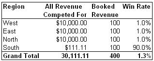
The average option is appropriate for the first two number fields, and the user may use the Averages option for these two fields.
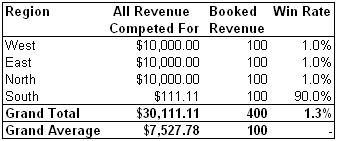
If the user would still go ahead and choose to display "Win rate" as an average she would see 23.3% which is not a meaningful number.
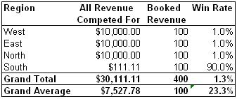
Displaying Totals that Also Include Filtered Out ValuesBy default, Totals sum only the values that are visible on the report. If values are filtered out they will not be part of the total. This is illustrated below.
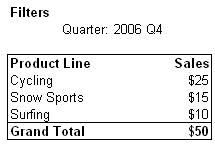
If we filter out a Product Line, the totals row will change accordingly:
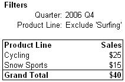
However, you may also want see a total that includes the values that are filtered out and Pentaho offers this option. Continuing on the example above we would get:
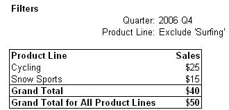
Note that the new total still restricts data to 2006 Q4. Any filters applied to fields placed on the opposite axis would still apply, as would filters that apply on fields to the left of the total. To display a total that also includes values that are filtered out, click the Grand Total cell on the report, and select Display Total that Includes Filtered Out Values from the menu. Alternatively, click More Actions and select Report Options from the menu. Then check the Also Display Totals that Include Filtered Out Values checkbox. Displaying % of, Rank, Running Sum, etcTo display % or, Rank, Running Sum, etc, click a field on the report and select % of, Rank, Running Sum, etc from the menu. Then, select the appropriate option. This will create a new field in your report that behaves similar to any other fields. The differences are:
See below for further help on each option. % ofWhen displaying values as percentages (%) you have four options:
Below follows an example that illustrates each option. Grand Total Column is 100%
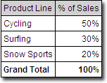
Grand Total Row is 100%
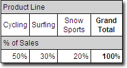
Grand Total in lower right corner is 100%
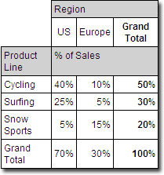
Each <field> adds to 100% This option is only available when you have multiple text fields on the report
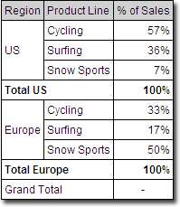
RankWhen ranking values (such as Product Lines) by a number field (such as Sales Revenue), you have three options
Below follows an example that illustrates each option. Rank across Rows
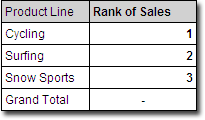
Rank across Columns
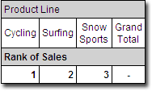
Rank Within <field> This option is only available when you have multiple text fields on the report
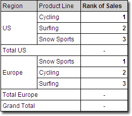
Note that you are always ranking by the innermost row/column ('Product Line'). You may not rank by 'Region'. Running SumThe most common use of Running Sum, (a.k.a. Cumulative Sum) is to show how a number grows over time. For example, what was total sales revenue for this year, up and through January, February, March, etc. When creating a Running Sum field you have three options:
Below follows an example that illustrates each option. Sum across all Rows
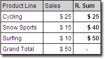
Sum across all Columns
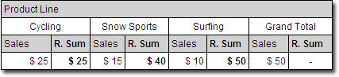
Break By <field> This option is only available when you have multiple text fields on the report
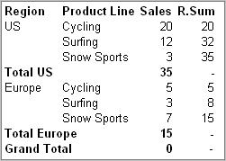
% of Running SumThe % of Running Sum option combines the % of and the Running Sum functionality. You have three options:
Below follows an example that illustrates each option. Sum across all Rows
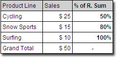
Sum across all Columns
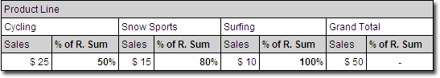
Break By <field> This option is only available when you have multiple text fields on the report
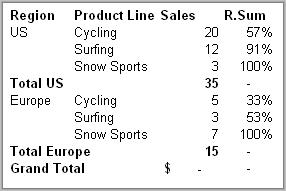
SortingBy default, your report is sorted in alphanumeric order by text fields (such as 'Product Line'). To re-sort a row or column click the field on the report and select a Sort options from the menu. The image below illustrates which fields can be re-sorted based on their placement on the report. 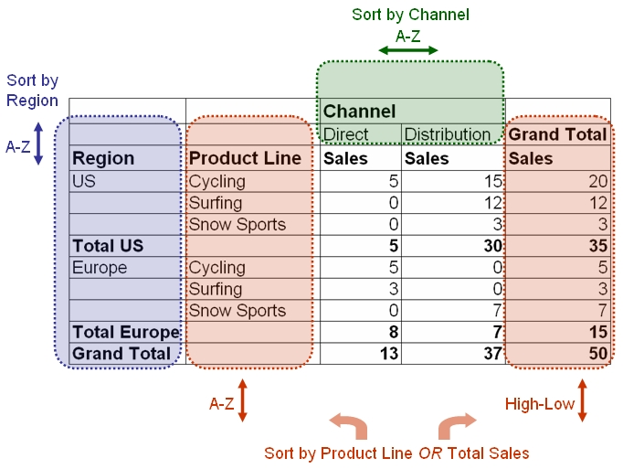
Creating New NumbersPentaho allows you to create three types of new numbers directly within a report:
Creating Calculated Numbers
Tips on Creating Calculated Numbers
| ||||||||||||||||||||||||||||
Related Topics |
||||||||||||||||||||||||||||